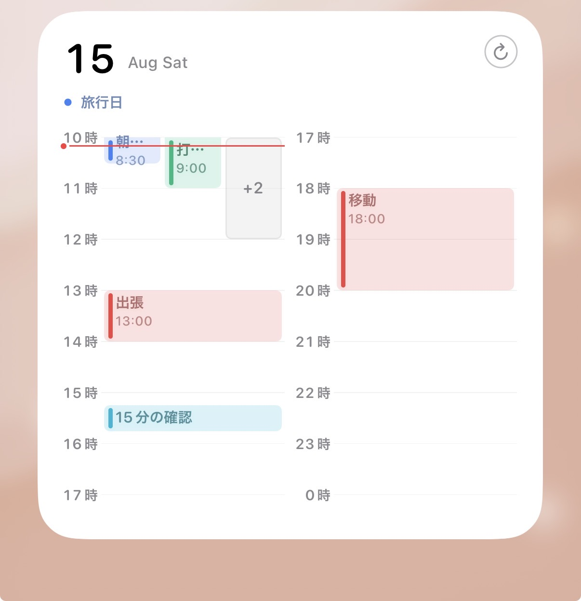

GC Timeline
Google Calendarの予定を、iPhoneのホーム画面から タイムライン形式で確認するための個人開発ウィジェットです。

About
GC Timelineは、日々の予定をアプリを開かずに確認できるようにすることを 目的として開発したiOS向けカレンダーウィジェットです。 Google Calendar APIを利用して予定情報を取得し、 一日のスケジュールをタイムライン形式で表示します。
Features
Timeline View
一日の予定を時間軸に沿って表示し、 空いている時間と予定のある時間を確認できます。
Home Screen Widget
iPhoneのホーム画面から、その日の予定を確認できます。
Google Calendar
Google Calendar APIを利用し、 カレンダーに登録されている予定情報を取得して表示します。
Google Calendar Data
Google Calendarから取得した情報は、 カレンダー予定をウィジェット上に表示するために使用します。 取得したGoogleユーザーデータを広告やマーケティング目的で 使用することはありません。
Privacy
Google Calendar APIを通じて取得する情報の取り扱いについては、 Privacy Policyをご確認ください。
Privacy Policy →